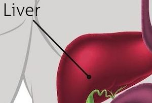
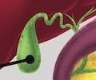
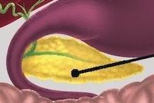

Accessory organs
Accessory are not part of, but are important to, the digestive system.- Liver
- Gall bladder
- Pancreas

Liver
- Produces bile

Gall bladder
- Stores bile
- Bile can solidify and form gall stones

Pancreas
- Produces pancreatic insulin
- Produces insulin